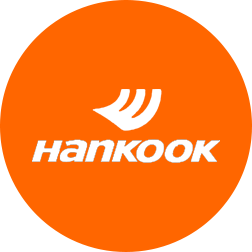
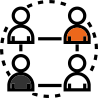
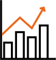
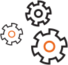

HOME > 지속가능경영 > 이해관계자
이해관계자
한국타이어앤테크놀로지는 이해관계자 그룹을 당사와 가장 밀접한 관계에 있으면서 영향을 주고받는 핵심 그룹과 간접적 영향 또는 잠재적 영향을 주고받는 일반 그룹으로 구분하고 있으며, 이해관계자 커뮤니케이션과 기업 내·외부 환경 분석을 통하여 CSR 이슈를 명확히 규명하였습니다.
또한, 한국타이어앤테크놀로지의 CSR 성과와 계획을 이해관계자들과 공유하기 위해 노력하고 있으며 이해관계자들의 의견을 직접 들을 수 있는 다양한 커뮤니케이션 채널을 운영하고 있습니다.
- 고객
- 임직원
- 협력사
- 
-  지역사회
-  주주,투자자
-  환경
 고객(일반고객 및 딜러)
고객(일반고객 및 딜러)
- 커뮤니케이션 채널
- 기술교류회, 전시회, 박람회, 지속가능성 평가, 대리점 간담회, 고객만족센터
- 커뮤니케이션 내용
- 제품 사용 시 소비자 안전, 보건 강화
- 제품 품질 강화 및 안전성 확보
- 제품 책임성 강화, 책임 있는 마케팅
- 신속한 고객 불만 처리 및 피드백
임직원
- 커뮤니케이션 채널
- 노사협의회, 간담회, 고충처리제도, 조직 몰입도 설문조사, 내부 인트라넷
- 커뮤니케이션 내용
- 상생의 노사관계 구축
- 성장을 지원하는 교육 강화
- 일과 삶의 조화
- 내부 커뮤니케이션 활성화
협력사
- 커뮤니케이션 채널
- 협력사 정기평가, 품질 및 CSR교육, 한국타이어 구매포털
- 커뮤니케이션 내용
- 협력사 경쟁력 강화 프로그램(교육, 기술 지원 등)
- 공정거래 및 상생경영
- 적극 커뮤니케이션 및 정보공유 강화
지역사회
- 커뮤니케이션 채널
- 지역주민 간담회 , 지역 관공서 및 NGO 간담회, 지역사회 민원 수렴 등
- 커뮤니케이션 내용
- 지역경제 활성화
- 지역 내 소외계층의 교육 및 의식주 문제 해결
- 사회투자로서 사회공헌 활동 등
주주 및 투자자
- 커뮤니케이션 채널
- 이사회, 주주총회, 해외 컨퍼런스, IR등
- 커뮤니케이션 내용
- 경영 성과 및 주주가치 극대화
- 조직 투명성 및 지속가능성 관리
- 건전한 기업지배구조
- 투명, 윤리경영, 통합 리스크 관리 등
환경
- 커뮤니케이션 채널
- 정부 및 규제기관 담당자 수시 미팅, 지역사회 민원 수렴 등
- 커뮤니케이션 내용
- 기업의 환경적 책임 이행
- 기후변화대응 참여
- 원재료 사용 효율화 및 재활용 확대